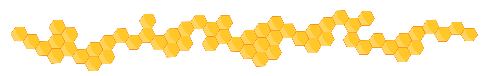

A honey bee (also spelled honeybee) is a eusocial flying insect within the genus Apis of the bee clade, all native to Eurasia but spread to four other continents by human beings. They are known for their construction of perennial colonial nests from wax, the large size of their colonies, and surplus production and storage of honey, distinguishing their hives as a prized foraging target of many animals, including honey badgers, bears and human hunter-gatherers. Only eight surviving species of honey bee are recognized, with a total of 43 subspecies, though historically 7 to 11 species are recognized. Honey bees represent only a small fraction of the roughly 20,000 known species of bees.
The best known honey bee is the western honey bee (Apis mellifera), which has been domesticated for honey production and crop pollination; the only other domesticated bee is the eastern honey bee (Apis cerana), which occurs in South Asia. Some other types of related bees produce and store honey, and have been kept by humans for that purpose, including the stingless bees, but only members of the genus Apis are true honey bees. Modern humans also value the wax for use in making candles, soap, lip balms, and other products.
The genus name Apis is Latin for "bee".[1] Although modern dictionaries may refer to Apis as either honey bee or honeybee, entomologist Robert Snodgrass asserts that correct usage requires two words, i.e. honey bee, as it is a kind or type of bee, whereas it is incorrect to run the two words together, as in dragonfly or butterfly, because the latter are not flies,[2] and have no connection with dragons or butter. Honey bee, not honeybee, is the listed common name in the Integrated Taxonomic Information System, the Entomological Society of America Common Names of Insects Database, and the Tree of Life Web Project.[3][4][5]
Honey bees appear to have their center of origin in South and Southeast Asia (including the Philippines), as all the extant species except Apis mellifera are native to that region. Notably, living representatives of the earliest lineages to diverge (Apis florea and Apis andreniformis) have their center of origin there.[6] The first Apis bees appear in the fossil record at the Eocene-Oligocene boundary (34 mya), in European deposits. The origin of these prehistoric honey bees does not necessarily indicate Europe as the place of origin of the genus, only that the bees were present in Europe by that time. Few fossil deposits are known from South Asia, the suspected region of honey bee origin, and fewer still have been thoroughly studied. No Apis species existed in the New World during human times before the introduction of A. mellifera by Europeans. Only one fossil species is documented from the New World, Apis nearctica, known from a single 14 million-year-old specimen from Nevada.[7] The close relatives of modern honey bees – e.g., bumblebees and stingless bees – are also social to some degree, and social behavior seems a plesiomorphic trait that predates the origin of the genus. Among the extant members of Apis, the more basal species make single, exposed combs, while the more recently evolved species nest in cavities and have multiple combs, which has greatly facilitated their domestication.